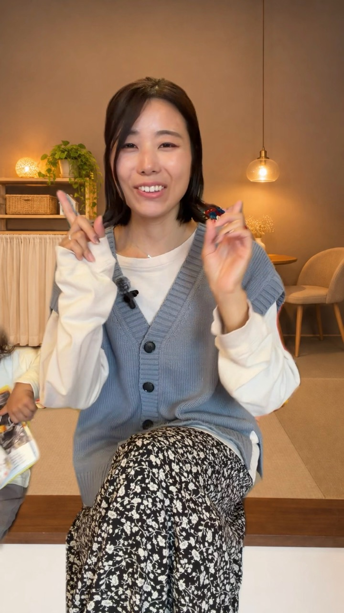

1
STEP 1
ChatGPTで登場人物を作る

自分の元動画スクショで姿勢を確認人物画像向きとサイズをそろえる
元動画のスクショと、AIで作った人物画像の比較です。
上半身で短い動画を撮り、手や顔が見やすい場面をスクショ。それをChatGPTに添付して、人物画像を作ります。
架空の人物を作る指示文
投稿に使う、架空の成人女性の人物画像を1枚作ってください。 添付した自分の動画のスクショは、姿勢と画角だけの参考です。自分の顔の再現や、実在人物への類似は求めていません。 【構図】 スクショと同じ体の向き・視線・人物サイズ・手の位置を保つ。手や腕が欠けず、周囲に少し余白がある縦長画像。 【人物】 自然な表情、肩に触れる長さの茶色の髪、無地の生成り色の服。清潔感のある写真表現。 【固定】 カメラの高さ・距離・撮影方向と背景の遠近感を保つ。文字・ロゴ・装飾的な枠は入れない。
服装だけ変える指示文
添付1の人物画像を編集します。添付2の服の色とシルエットを参考に、衣服だけを変更してください。 顔立ち・髪・表情・姿勢・手の位置・カメラの向き・背景は変更しないでください。 服のロゴや文字は再現せず、無地にします。人物の輪郭と服の境界を自然に整えてください。
一度に全部変えないまず人物、次に服装、必要なら髪型。1回につき1か所ずつ直すと、どこで崩れたか確認できます。